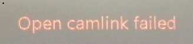
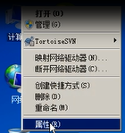
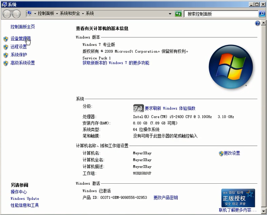
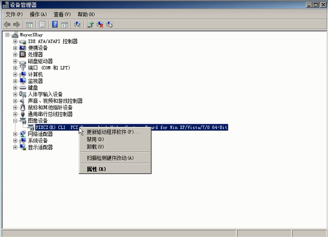

80XS开机自检问题点：
解决方法：第一步先卸载原有采集卡驱动。
卸载方法：鼠标右键“计算机”~选择“属性”~鼠标左键点击“设备管理器”~展开“图像设备”~鼠标右键选中已安装的驱动，点击卸载,从右键“计算机”~选择“属性”中确定该计算机是32位还是64位，卸载完成后重新启动计算机，第一步完成。如下图：



解决方法：第二步安装采集卡驱动。
安装注意事项：安装EPIX采集卡驱动要区分32位和64位操作系统，若操作系统为32位，则进入X光产品线技术支持网站“技术指导”—“软硬件设置”—“触摸屏、采集卡驱动安装步骤”查看如何安装，若系统为64位操作系统，则先安装完采集卡驱动后，再安装“xcap_demo，在哪里下载？（https://meyerxray.github.io/）请进入X光产品线技术支持网站软件驱动中可以直接下载，安装步骤请观看以下视频：
xcap_demo安装演示视频（3.59MB）
解决方法：第三步采集卡设置。
采集卡设置：打开快捷方式“XCAP-for-windows”，进入删除多余对话框，点击“PIXCI”，选择“PIXCI@OPEN/CLOSE",点击“Advanced”勾选4GB，点击OK后关闭对话框，设置完毕，详细设置可以观看以下视频：
采集卡设置演示视频（1.55MB）